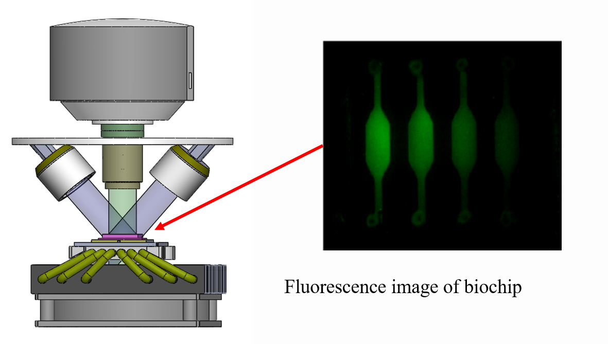
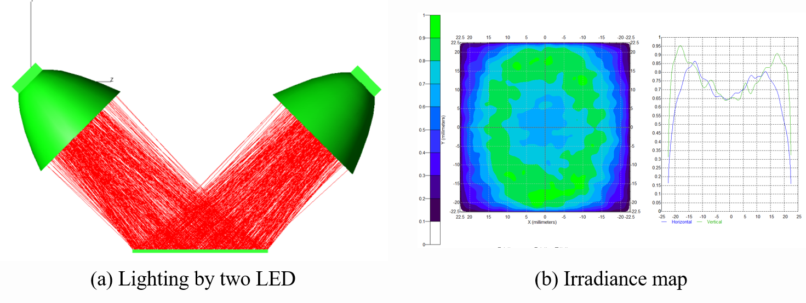
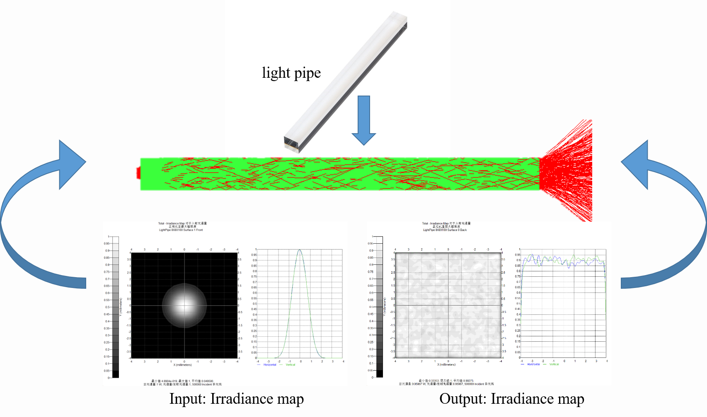
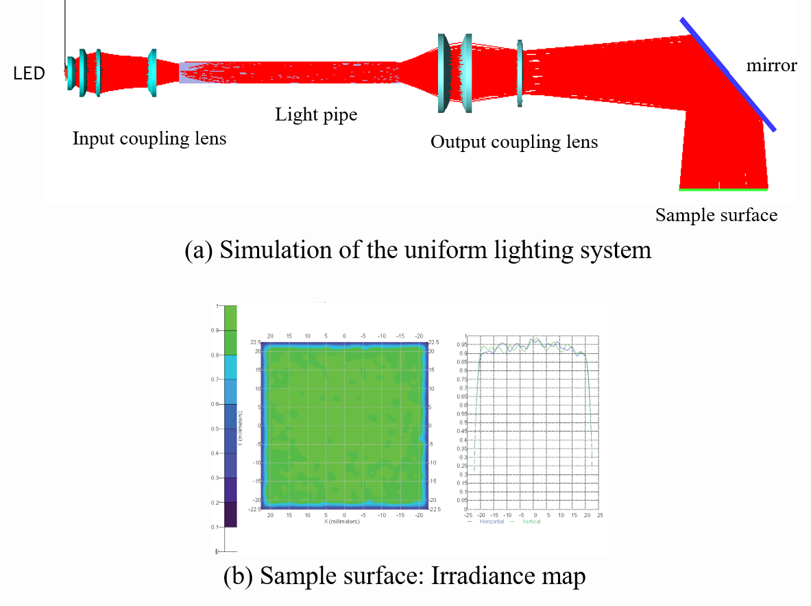
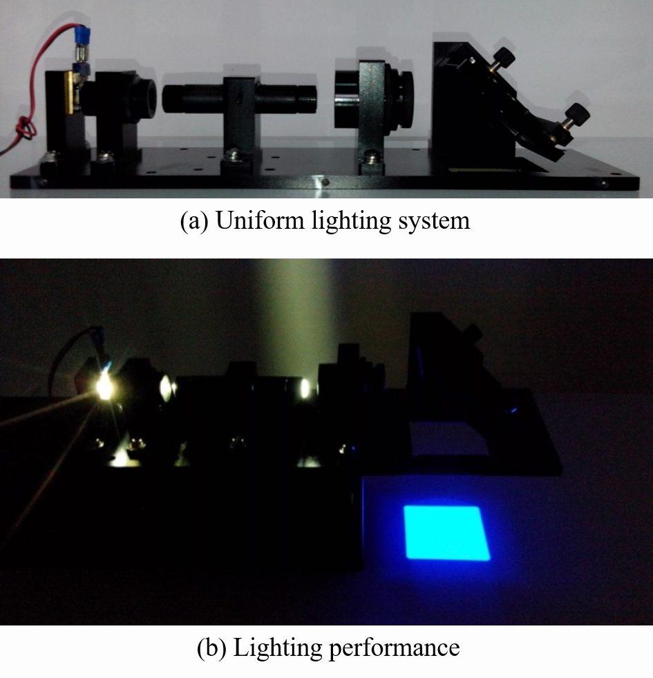
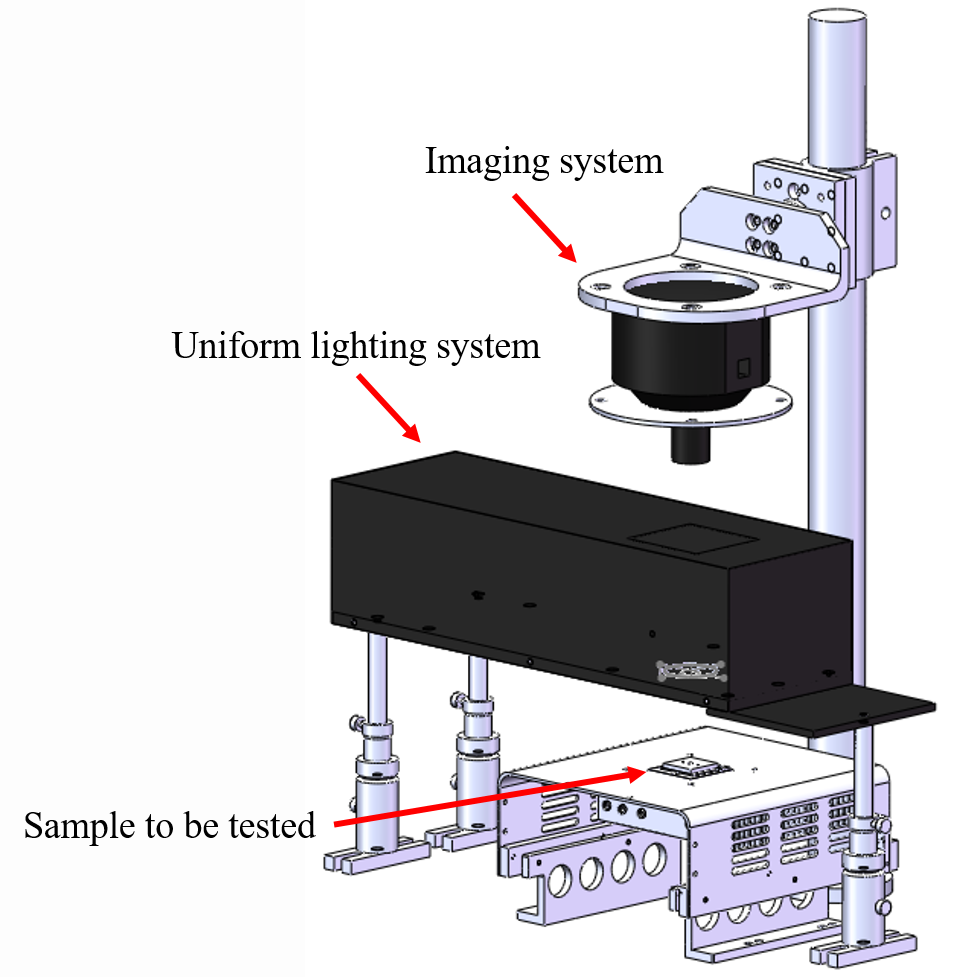
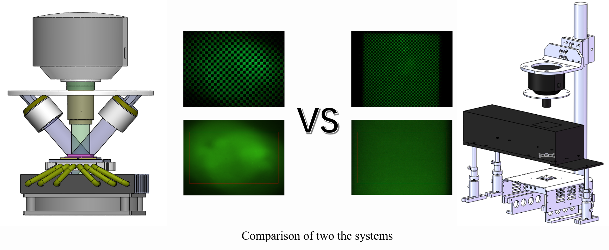

微流控qPCR荧光成像非均匀问题研究

Abstract
微流控qPCR利用微流控芯片技术实现了芯片上的荧光定量PCR反应，具有分析速度快、能耗低、污染小等特点，在分子生物学研究及医疗诊断领域应用广泛。荧光成像通过一次成像同时获取多个反应腔荧光信号，是微流控qPCR荧光检测的重要技术手段之一。荧光成像非均匀是影响微流控qPCR定量精度的主要因素之一。文章通过分析微流控qPCR过程，量化了微流控qPCR荧光成像非均匀性要求，并针对微流控芯片的结构特点设计了相应的荧光成像检测模块。
本文首先从荧光定量PCR数学原理出发，通过微分运算分析了荧光成像非均匀性对DNA浓度定量精度的影响，量化了荧光成像应满足的均匀性要求。从光学角度分析了导致荧光成像非均匀的因素，主要包括激发光路非均匀问题和成像光路非均匀问题。针对激发光路非均匀问题，将原有斜入射激发光路结构改为同轴激发，并引入光刻机中的光棒匀光技术用于提高激发光均匀性。针对成像光路非均匀问题，分析了产生成像非均匀问题的主要因素，通过合理选择物镜，优化物镜设置参数，对成像光路作了适当改进。
最后利用荧光素钠溶液对所设计荧光检测模块进行测试。结果表明，与现有斜入射荧光成像光路相比，基于光棒匀光的同轴荧光成像光路荧光成像均匀性得到很大提高。并且，同轴光路的使用对后续进行多种滤光片的切换功能的扩展提供了很大方便。将所改进后的荧光检测模块用于微流控qPCR荧光信号采集，结果表明，测量精度得到提高。
Problem: Nonuniformity of fluorescence imaging

Reason: Non-uniform illumination

Method: Homogenizer based on light pipe

Solution: Design and Implementation



Comparison

出版物
LIBS用于气溶胶分析的研究与应用进展
激光诱导击穿光谱（Laser-induced breakdown spectroscopy, LIBS）技术作为一种多元素实时检测技术，已被众多研究者用于气溶胶成分的原位在线分析。对近年来LIBS技术应用于大气气溶胶的研究概况和进展进行了简要综述: 简述了LIBS技术的 …

高通量微流控荧光定量PCR激发光非均匀性研究
研究高通量微流控荧光定量聚合酶链反应(PCR)激发光非均匀性问题对提高DNA浓度定量结果的精度具有重要意义。根据荧光定量PCR的原理,分析了激发光非均匀性对循环阙值(Ct)测量精度的影响,给出了激发光非均匀性引起Ct值测量偏差的表达式,确定了激发光强度标准偏差应小 …